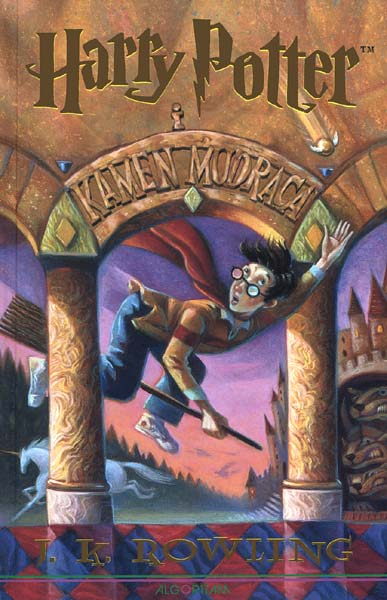

😸

Harry Potter i Kamen mudraca prva je od sedam knjiga iz serijala o Harryju Potteru autorice J. K. Rowling. Knjiga je prvi put objavljena 26. lipnja 1997. u izdanju Bloomsbury Publishinga, a kasnije je po njoj snimljen i istoimeni film. Kamen mudraca se smatra jednom od najprodavanijih knjiga ikada te je prvi dio najprodavanijeg serijala u povijesti pisane riječi. To je i najpopularnija od knjiga iz serijala po broju prodanih primjeraka - procjenjuje se da je u svijetu prodana u 107 milijuna primjeraka.